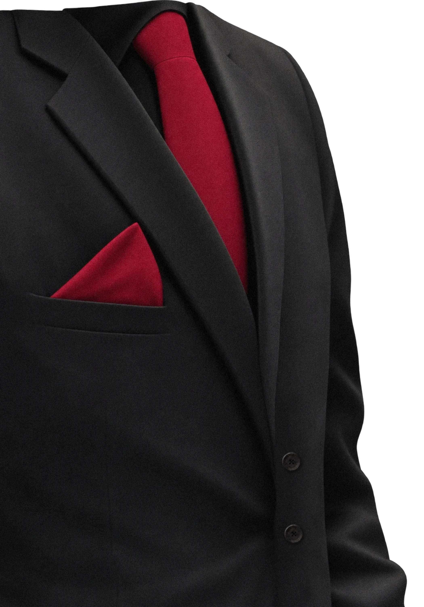
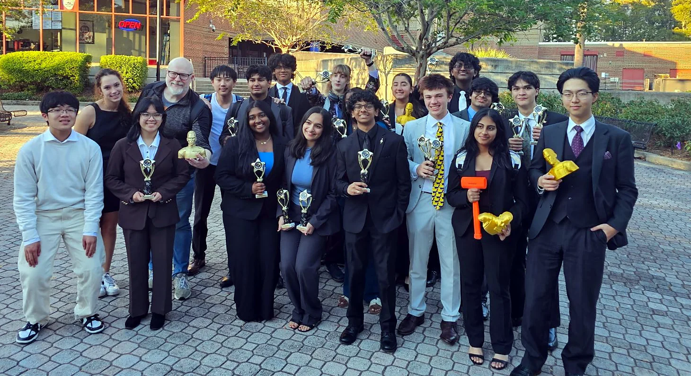

I compete in extemporaneous speaking, seven minutes at a time, and build Verba, a Latin practice site, between rounds.
Latin sentence practice from Latin I Honors through AP Latin, with Fēlix the tutor cat.
Verba builds a fresh Latin sentence from the topics you pick, and you translate the whole thing, English to Latin or Latin to English. It checks your answer, tells you exactly what went wrong, and lets you ask Fēlix, an AI tutor, about the grammar along the way. I made it for my own high school Latin class, so the topics follow Tennessee’s course sequence.
Puella, quae in hortō ambulat, rosās pulchrās carpit.
Fēlix: In plus the ablative tells you where something happens. Look at the ending on hortō.
Language sites in JavaScript, plus Python projects from working through Boot.dev’s back-end path.
Varsity competitor in Extemporaneous and Impromptu Speaking at Collierville High School.

UCF Constellation, national circuit, Extemporaneous Speaking.
Tennessee THSSDL, Extemporaneous Speaking.
Member of an international virtual club from 2020, and president in my final year. Started member-run debates and Shark Tank–style pitch rounds, and mentored new members.
Teach extemp and impromptu every week, and help run the annual Collierville High School Invitational.
Delegate.
Draw a current-affairs question, research it in thirty minutes, then deliver a memorized, evidence-backed, three-point speech.
For speaking, tutoring, or anything about Verba.